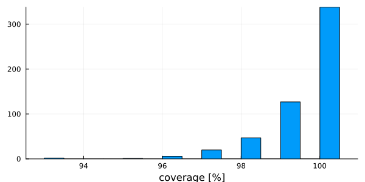

MSA
The MSA module of MIToS has utilities for working with Multiple Sequence Alignments of protein Sequences (MSA).
using MIToS.MSA # to load the MSA moduleFeatures
- Read and write MSAs in
Stockholm,FASTA,PIRorRawformat. - Handle MSA annotations.
- Edit the MSA, e.g. delete columns or sequences, change sequence order, shuffling...
- Keep track of positions and annotations after modifications on the MSA.
- Describe an MSA, e.g. mean percent identity, sequence coverage, gap percentage...
- Sequence clustering with Hobohm I.
Contents
- MSA
MSA IO
Reading MSA files
The main function for reading MSA files in MIToS is read and it is defined in the Utils module. This function takes a filename/path as a first argument followed by other arguments. It opens the file and uses the arguments to call the parse function. read decides how to open the file, using the prefixes (e.g. https) and suffixes (i.e. extensions) of the file name, while parse does the actual parsing of the file. You can read gzipped files if they have the .gz extension and also urls pointing to a web file. The second argument of read and parse is the file FileFormat. The supported MSA formats at the moment are Stockholm, FASTA, PIR (NBRF) and Raw. For example, reading with MIToS the full Stockholm MSA of the family PF07388 using the Pfam RESTful interface will be:
using MIToS.MSA
read("http://pfam.xfam.org/family/PF07388/alignment/full", Stockholm)AnnotatedMultipleSequenceAlignment with 35 annotations : 14×459 Named Array{MIToS.MSA.Residue,2}
Seq ╲ Col │ 24 25 26 27 28 … 551 552 553 554 555
─────────────────────────┼────────────────────────────────────────────────────
A0A1S1T395_9RHIZ/224-427 │ - - - - - … - - - - -
M5A3D2_9ACTN/208-402 │ - - - - - - - - - -
A0A1B8PI30_MORNO/200-434 │ - - - - - - - - - -
A0A1W1V8Q8_9PAST/1-405 │ - - S K F - - - - -
A0A0B0IGB5_9BACI/201-416 │ - - - - - - - - - -
A0A0B0IGB5_9BACI/1-170 │ - - - - - - - - - -
Q4W584_NEIMB/1-222 │ M L K K I - - - - -
A0A1S1TKC5_9RHIZ/184-421 │ - - - - - - - - - -
A0A1S1TKC5_9RHIZ/2-147 │ - - - - - - - - - -
C5ZW53_9HELI/1-498 │ - - K K L K Y L Q L
M5A3D2_9ACTN/2-157 │ - - - - - - - - - -
A0A1B8PI30_MORNO/6-183 │ - - - - - - - - - -
A0A157SWM6_9BORD/1-413 │ - L K K L - - - - -
A0A1S1T395_9RHIZ/6-168 │ - - - - - … - - - - -The third (and optional) argument of read and parse is the output MSA type:
Matrix{Residue}: It only contains the aligned sequences.MultipleSequenceAlignment: It contains the aligned sequences and their
names/identifiers.
AnnotatedMultipleSequenceAlignment: It's the richest MIToS' MSA format and it's the
default. It includes the aligned sequences, their names and the MSA annotations.
Example of Matrix{Residue} output using a Stockholm file as input:
read("http://pfam.xfam.org/family/PF07388/alignment/full", Stockholm, Matrix{Residue})14×459 Array{MIToS.MSA.Residue,2}:
- - - - - - - - - - - - - … - - - - - - - - - - - -
- - - - - - - - - - - - - - - - - - - - - - - - -
- - - - - - - - - - - - - - - - - - - - - - - - -
- - S K F T K F I F N P K - - - - - - - - - - - -
- - - - - - - - - - - - - - - - - - - - - - - - -
- - - - - - - - - - - - - … - - - - - - - - - - - -
M L K K I K K A L F Q P K - - - - - - - - - - - -
- - - - - - - - - - - - - - - - - - - - - - - - -
- - - - - - - - - - - - - - - - - - - - - - - - -
- - K K L S G L M Q D I K D F Q K Y R I K Y L Q L
- - - - - - - - - - - - - … - - - - - - - - - - - -
- - - - - - - - - - - - - - - - - - - - - - - - -
- L K K L R K L I L H P V - - - - - - - - - - - -
- - - - - - - - - - - - - - - - - - - - - - - - -Because read calls parse, you should look into the documentation of parse to know the available keyword arguments. The optional keyword arguments of those functions are:
generatemapping: Ifgeneratemappingistrue(default:false), sequences and
columns mappings are generated and saved in the MSA annotations. The default is false to not overwrite mappings by mistake when you read an annotated MSA file saved with MIToS.
useidcoordinates: Ifuseidcoordinatesistrue(default:false) and the names
have the form seqname/start-end, MIToS uses this coordinates to generate sequence mappings. This is safe and useful with unmodified Pfam MSAs. Do not use it when reading an MSA saved with MIToS. MIToS deletes unaligned insert columns, therefore disrupts sequences that have them.
deletefullgaps: Given that lowercase characters and dots are converted to gaps,
unaligned insert columns in the MSA (derived from a HMM profile) are converted into full gap columns. deletefullgaps is true by default, deleting full gaps columns and therefore insert columns.
If you want to keep the insert columns... Use the keyword argument keepinserts to true in read/parse. This only works with an AnnotatedMultipleSequenceAlignment output. A column annotation ("Aligned") is stored in the annotations, where insert columns are marked with 0 and aligned columns with 1.
When read returns an AnnotatedMultipleSequenceAlignment, it uses the MSA Annotations to keep track of performed modifications. To access these notes, use printmodifications:
msa = read("http://pfam.xfam.org/family/PF01565/alignment/full", Stockholm)
printmodifications(msa)-------------------
2019-07-02T23:37:58.778
deletefullgaps! : Deletes 861 columns full of gaps (inserts generate full gap columns on MIToS because lowercase and dots are not allowed)
-------------------
2019-07-02T23:37:59.009
filtercolumns! : 861 columns have been deleted.Writing MSA files
Julia REPL shows MSAs as Matrices. If you want to print them in another format, you should use the print function with an MSA object as first argument and the FileFormat FASTA, Stockholm, PIR or Raw as second argument.
using MIToS.MSA
msa = read("http://pfam.xfam.org/family/PF16996/alignment/full", Stockholm) # reads a Stockholm MSA file
print(msa, FASTA) # prints msa in FASTA format>U5P5G4_9STRE/5-59
KKDLFYKEVEGRMNALKRRSAEKEKATRSEKVNLTLNVVIGLVILLGVLLTLFRV
>T0TMU0_9STRE/1-43
------------MEELKQKPITKEKETRGEKINKSFSIMLGLVIIIGLIFTLI--
>A0A139NPI6_9STRE/5-59
-EDLFYKEVEGRMADLQQKAPEKEKKTGAERLNTLFSLALGLVILLGLLFTLLR-
>A0A139NTT2_9STRE/3-57
KKDLFYKDVEQKLDSLKQGQPKKEKASLGEKLNKAFVIALGLVILIGLIFTLI--
>T0TY77_9STRE/5-59
KKDLFYKEVEGRMESLKRRPAEKEKTTRSEKINVTFNVIIGLVILLGVIFTLFRV
>A8AWV6_STRGC/3-57
KKDLFYKDIEGRLDELKHGRPKKEKASLGEKFNKAFVIALGLMILIGLIFTLIG-
>A0A139NMD7_9STRE/4-59
KDDIFYKDIEGRMDELKRKPPKKEKKTRAERISTFFSVSLGLVILIGLLFTLFRI
>A3CM62_STRSV/3-57
KKDLFYKDIEGRLDELKHGKPKKEKASLGENLNKAFVIVLGLMILIGLIFTLI--To save an MSA object to a file, use the write function. This function takes a filename as a first argument. If the filename ends with .gz, the output will be a compressed (gzipped) file. The next two arguments of write are passed to print, so write behaves as print.
write("msa.gz", msa, FASTA) # writes msa in FASTA format in a gzipped fileMSA Annotations
MSA annotations are based on the Stockholm format mark-ups. There are four types of annotations stored as dictionaries. All the annotations have a feature name as part of the key, which should be a single "word" (without spaces) and less than 50 characters long.
- File annotations : The annotations can contain either file or MSA information. They
have feature names as keys and the values are strings (free text). Lines starting with #=GF in Stockholm format.
- Column annotations : They have feature names as keys and strings with exactly 1 char
per column as values. Lines starting with #=GC in Stockholm format.
- Sequence annotations : The keys are tuples with the sequence name and the feature
name. The values are free text (strings). Lines starting with #=GS in Stockholm format. Annotations in the PIR/NBRF format are also stored as sequence annotations. In particular, we use the names "Type" and "Title" to name the sequence type in the identifier line and the first comment line before the sequence in PIR files, respectively.
- Residue annotations : The keys are tuples with the sequence name and the feature
name. The values are strings with exactly 1 char per column/residues. #=GR lines in Stockholm format.
Julia REPL shows the Annotations type as they are represented in the Stockholm format . You can get the
. You can get the Annotations inside an annotated MSA or sequence using the annotations function.
annotations(msa)#=GF ID Asp4
#=GF AC PF16996.5
#=GF DE Accessory secretory protein Sec Asp4
#=GF AU Coggill P;0000-0001-5731-1588
#=GF SE Pfam-B_7603 (release 27.0)
#=GF GA 25.70 25.70;
#=GF TC 55.00 54.80;
#=GF NC 21.60 20.60;
#=GF BM hmmbuild HMM.ann SEED.ann
#=GF SM hmmsearch -Z 45638612 -E 1000 --cpu 4 HMM pfamseq
#=GF TP Family
#=GF RN [1]
#=GF RM 23000954
#=GF RT Emerging themes in SecA2-mediated protein export.
#=GF RA Feltcher ME, Braunstein M;
#=GF RL Nat Rev Microbiol. 2012;10:779-789.
#=GF DR INTERPRO; IPR031551;
#=GF DR SO; 0100021; polypeptide_conserved_region;
#=GF CC Asp4 and Asp5 are putative accessory components of the SecY2
#=GF CC channel of the SecA2-SecY2 mediated export system, but they are
#=GF CC not present in all SecA2-SecY2 systems. This family of Asp4 is
#=GF CC found in Firmicutes [1].
#=GF SQ 8
#=GF MIToS_2019-07-02T23:37:59.435 deletefullgaps! : Deletes 3 columns full of gaps (inserts generate full gap columns on MIToS because lowercase and dots are not allowed)
#=GF MIToS_2019-07-02T23:37:59.435 filtercolumns! : 3 columns have been deleted.
#=GS A3CM62_STRSV/3-57 AC A3CM62.1
#=GS A0A139NTT2_9STRE/3-57 AC A0A139NTT2.1
#=GS A0A139NMD7_9STRE/4-59 AC A0A139NMD7.1
#=GS T0TMU0_9STRE/1-43 AC T0TMU0.1
#=GS U5P5G4_9STRE/5-59 AC U5P5G4.1
#=GS T0TY77_9STRE/5-59 AC T0TY77.1
#=GS A0A139NPI6_9STRE/5-59 AC A0A139NPI6.1
#=GS A8AWV6_STRGC/3-57 AC A8AWV6.1
#=GC seq_cons KKDLFYK-lEGRM--LK++sPcKEKsTtuEKlNpsFslsLGLVILIGLIFTLlt.
Particular annotations can be accessed using the functions getannot.... These functions take the MSA/sequence as first argument and the feature name of the desired annotation as the last. In the case of getannotsequence and getannotresidue, the second argument should be the sequence name.
getannotsequence(msa, "A0A139NPI6_9STRE/5-59", "AC") # ("A0A139NPI6_9STRE/5-59", "AC") is the key in the dictionary"A0A139NPI6.1"If you want to add new annotations, you should use the setannot…! functions. These functions have the same arguments that getannot... functions except for an extra argument used to indicate the new annotation value.
setannotsequence!(msa, "A0A139NPI6_9STRE/5-59", "New_Feature_Name", "New_Annotation")"New_Annotation"A getannot... function without the key (last arguments), returns the particular annotation dictionary. As you can see, the new sequence annotation is now part of our MSA annotations.
getannotsequence(msa)Dict{Tuple{String,String},String} with 9 entries:
("A3CM62_STRSV/3-57", "AC") => "A3CM62.1"
("A0A139NTT2_9STRE/3-57", "AC") => "A0A139NTT2.1"
("A0A139NMD7_9STRE/4-59", "AC") => "A0A139NMD7.1"
("T0TMU0_9STRE/1-43", "AC") => "T0TMU0.1"
("U5P5G4_9STRE/5-59", "AC") => "U5P5G4.1"
("T0TY77_9STRE/5-59", "AC") => "T0TY77.1"
("A0A139NPI6_9STRE/5-59", "AC") => "A0A139NPI6.1"
("A0A139NPI6_9STRE/5-59", "New_Feature_Name") => "New_Annotation"
("A8AWV6_STRGC/3-57", "AC") => "A8AWV6.1"Editing your MSA
MIToS offers functions to edit your MSA. Because these functions modify the msa, their names end with a bang !, following the Julia convention. Some of these functions have an annotate keyword argument (in general, it's true by default) to indicate if the modification should be recorded in the MSA/sequence annotations.
One common task is to delete sequences or columns of the MSA. This could be done using the functions filtersequences! and filtercolumns!. These functions take the MSA or sequence (if it's possible) as first argument and a BitVector or Vector{Bool} mask as second argument. It deletes all the sequences or columns where the mask is false. These functions are also defined for Annotations, this allows to automatically update (modify) the annotations (and therefore, sequence and column mappings) in the MSA.
This two deleting operations are used in the second and third mutating functions of the following list:
setreference!: Sets one of the sequences as the first sequence of the MSA (query or
reference sequence).
adjustreference!: Deletes columns with gaps in the first sequence of the MSA
(reference).
gapstrip!: This function first callsadjustreference!, then deletes sequences with
low (user defined) MSA coverage and finally, columns with user defined % of gaps.
Also, there are several available funtions shuffle_…!. These functions are useful to generate random alignments. The Information module of MIToS uses them to calculate the Z scores of MI values.
Example: Deleting sequences
For example, if you want to keep only the proteins from Actinobacteria you can delete all the sequences that don't have _9ACTN in their UniProt entry names:
using MIToS.MSA
msa = read("http://pfam.xfam.org/family/PF07388/alignment/full", Stockholm)
sequencenames(msa) # the function sequencenames returns the sequence names in the MSA14-element Array{String,1}:
"A0A1S1T395_9RHIZ/224-427"
"M5A3D2_9ACTN/208-402"
"A0A1B8PI30_MORNO/200-434"
"A0A1W1V8Q8_9PAST/1-405"
"A0A0B0IGB5_9BACI/201-416"
"A0A0B0IGB5_9BACI/1-170"
"Q4W584_NEIMB/1-222"
"A0A1S1TKC5_9RHIZ/184-421"
"A0A1S1TKC5_9RHIZ/2-147"
"C5ZW53_9HELI/1-498"
"M5A3D2_9ACTN/2-157"
"A0A1B8PI30_MORNO/6-183"
"A0A157SWM6_9BORD/1-413"
"A0A1S1T395_9RHIZ/6-168" mask = map(x -> occursin(r"_9ACTN", x), sequencenames(msa)) # an element of mask is true if "_9ACTN" is in the name14-element Array{Bool,1}:
false
true
false
false
false
false
false
false
false
false
true
false
false
falsefiltersequences!(msa, mask) # deletes all the sequences where mask is false
sequencenames(msa)2-element Array{String,1}:
"M5A3D2_9ACTN/208-402"
"M5A3D2_9ACTN/2-157" Example: Exporting a MSA for freecontact (part I)
The most simple input for the command line tool freecontact (if you don't want to set --mincontsep) is a Raw MSA file with a reference sequence without insertions or gaps. This is easy to get with MIToS using read (deletes the insert columns), setreference! (to choose a reference), adjustreference! (to delete columns with gaps in the reference) and write (to save it in Raw format) functions.
julia> using MIToS.MSA
julia> msa = read("http://pfam.xfam.org/family/PF02476/alignment/full", Stockholm)
AnnotatedMultipleSequenceAlignment with 41 annotations : 20×126 Named Array{MIToS.MSA.Residue,2}
Seq ╲ Col │ 9 10 11 12 13 … 205 206 207 208 209
─────────────────────────┼────────────────────────────────────────────────────
US02_GAHVM/120-237 │ M L E S E … F C C - -
A0A1R3T8S2_9ALPH/119-225 │ - - - - - - - - - -
B1A4T1_9ALPH/119-238 │ H L S S G A C C I -
A0A288CG55_EHV4/111-257 │ Y L N S S F C Q E -
E2IUH4_SHV1/110-233 │ - - - - - - - - - -
Q8V727_CHV1/110-256 │ - L C E P P C V A C
A0A060Q503_9ALPH/110-250 │ - L H G P S C P A -
Q77L60_MEHV1/120-238 │ M L E S E L C C C -
US02_HHV11/110-247 │ - L H R D P C C A C
⋮ ⋮ ⋮ ⋮ ⋮ ⋮ ⋱ ⋮ ⋮ ⋮ ⋮ ⋮
A0A0Y0DAF2_9ALPH/108-249 │ - - - - - - - - - -
A0A068EPE8_9ALPH/120-239 │ Y L E S G L C C - -
US02_HHV2H/110-246 │ L L H Q E P C F T C
J9R0A8_9ALPH/178-313 │ - - - - - - - - - -
A0A0A7D914_9ALPH/111-268 │ H L N S S T A - - -
Q67639_ILTV/100-201 │ H L S S G - - - - -
Q6R5Q3_9ALPH/120-237 │ M L E S E F C C - -
Q5PP72_9ALPH/135-256 │ Y L N S G R C T I -
Q5EGY0_CHV16/111-255 │ - L C D P … P C T A C
julia> msa_coverage = coverage(msa)
20×1 Named Array{Float64,2}
Seq ╲ Function │ coverage
─────────────────────────┼─────────
US02_GAHVM/120-237 │ 0.904762
A0A1R3T8S2_9ALPH/119-225 │ 0.65873
B1A4T1_9ALPH/119-238 │ 0.912698
A0A288CG55_EHV4/111-257 │ 0.960317
E2IUH4_SHV1/110-233 │ 0.801587
Q8V727_CHV1/110-256 │ 0.992063
A0A060Q503_9ALPH/110-250 │ 0.984127
Q77L60_MEHV1/120-238 │ 0.912698
US02_HHV11/110-247 │ 0.97619
⋮ ⋮
A0A0Y0DAF2_9ALPH/108-249 │ 0.65873
A0A068EPE8_9ALPH/120-239 │ 0.928571
US02_HHV2H/110-246 │ 0.984127
J9R0A8_9ALPH/178-313 │ 0.761905
A0A0A7D914_9ALPH/111-268 │ 0.960317
Q67639_ILTV/100-201 │ 0.325397
Q6R5Q3_9ALPH/120-237 │ 0.904762
Q5PP72_9ALPH/135-256 │ 0.880952
Q5EGY0_CHV16/111-255 │ 0.992063
julia> maxcoverage, maxindex = findmax(msa_coverage) # chooses the sequence with more coverage of the MSA
(0.9920634920634921, CartesianIndex(6, 1))
julia> setreference!(msa, maxindex[1])
AnnotatedMultipleSequenceAlignment with 42 annotations : 20×126 Named Array{MIToS.MSA.Residue,2}
Seq ╲ Col │ 9 10 11 12 13 … 205 206 207 208 209
─────────────────────────┼────────────────────────────────────────────────────
Q8V727_CHV1/110-256 │ - L C E P … P C V A C
A0A1R3T8S2_9ALPH/119-225 │ - - - - - - - - - -
B1A4T1_9ALPH/119-238 │ H L S S G A C C I -
A0A288CG55_EHV4/111-257 │ Y L N S S F C Q E -
E2IUH4_SHV1/110-233 │ - - - - - - - - - -
US02_GAHVM/120-237 │ M L E S E F C C - -
A0A060Q503_9ALPH/110-250 │ - L H G P S C P A -
Q77L60_MEHV1/120-238 │ M L E S E L C C C -
US02_HHV11/110-247 │ - L H R D P C C A C
⋮ ⋮ ⋮ ⋮ ⋮ ⋮ ⋱ ⋮ ⋮ ⋮ ⋮ ⋮
A0A0Y0DAF2_9ALPH/108-249 │ - - - - - - - - - -
A0A068EPE8_9ALPH/120-239 │ Y L E S G L C C - -
US02_HHV2H/110-246 │ L L H Q E P C F T C
J9R0A8_9ALPH/178-313 │ - - - - - - - - - -
A0A0A7D914_9ALPH/111-268 │ H L N S S T A - - -
Q67639_ILTV/100-201 │ H L S S G - - - - -
Q6R5Q3_9ALPH/120-237 │ M L E S E F C C - -
Q5PP72_9ALPH/135-256 │ Y L N S G R C T I -
Q5EGY0_CHV16/111-255 │ - L C D P … P C T A C
julia> adjustreference!(msa)
AnnotatedMultipleSequenceAlignment with 43 annotations : 20×125 Named Array{MIToS.MSA.Residue,2}
Seq ╲ Col │ 10 11 12 13 14 … 205 206 207 208 209
─────────────────────────┼────────────────────────────────────────────────────
Q8V727_CHV1/110-256 │ L C E P R … P C V A C
A0A1R3T8S2_9ALPH/119-225 │ - - - - - - - - - -
B1A4T1_9ALPH/119-238 │ L S S G I A C C I -
A0A288CG55_EHV4/111-257 │ L N S S I F C Q E -
E2IUH4_SHV1/110-233 │ - - - - - - - - - -
US02_GAHVM/120-237 │ L E S E V F C C - -
A0A060Q503_9ALPH/110-250 │ L H G P R S C P A -
Q77L60_MEHV1/120-238 │ L E S E A L C C C -
US02_HHV11/110-247 │ L H R D Q P C C A C
⋮ ⋮ ⋮ ⋮ ⋮ ⋮ ⋱ ⋮ ⋮ ⋮ ⋮ ⋮
A0A0Y0DAF2_9ALPH/108-249 │ - - - - - - - - - -
A0A068EPE8_9ALPH/120-239 │ L E S G I L C C - -
US02_HHV2H/110-246 │ L H Q E R P C F T C
J9R0A8_9ALPH/178-313 │ - - - - - - - - - -
A0A0A7D914_9ALPH/111-268 │ L N S S L T A - - -
Q67639_ILTV/100-201 │ L S S G A - - - - -
Q6R5Q3_9ALPH/120-237 │ L E S E V F C C - -
Q5PP72_9ALPH/135-256 │ L N S G A R C T I -
Q5EGY0_CHV16/111-255 │ L C D P R … P C T A C
julia> write("tofreecontact.msa", msa, Raw)
julia> print(read("tofreecontact.msa", String)) # It displays the contents of the output file
LCEPRPRPRLYHLWVVGAADLCVPFLEHLRRARRLVTIRVTDAWAGGSWPLPDGLAVGETVPWTPFPTAHNHPLAALFGGYEYRYGVVRPGWLRETVPRLWPGSESAAAEAAKTPHPARRPCVAC
------QTDRFRLWIIGAADICQQALSSFPKNMRRITVKVNGEWPGNPCFLDTNLEPVLISSWKPVSWPEK-ENNIDTSKLLCRYELLIP-----------------------------------
LSSGILGNHTFDMWIIGAADICKPAIEQLPNSKRFITIKVPGTWSGLTWEKPDGLSPLTVTEWDPCDDETMSKIEKKLVGIKCCYDLIGQ----------PAAAKHNSELDDSKDCCNGPACCI-
LNSSIIINRPYHLWVLGAADLCRPVFNLIPGPKRIVYVEIEDEF-NKSW-QPSETIPLTTVDARSLLQHKSSFVSPPPNFKRLIYAVVDP--MRLQENLCPQITNRTKTKRRSKKTYNGLFCQE-
------DQRLFHVWIVGAADLCEPLLACLSTGARCVVIEIGGLWGGRSWLPPAYARSGASTSWTPLPPPTGSAAESALEGCEYRYAIIPG----VEARRRPASRDENDERS--------------
LESEVSGNAPHSLWIVGAADICRIALECIPLPKRLLAIKVSGTWSGMPWAIPDNIQTLLTSTWEPKFDTPEDRAHFCDSDMVCVYKILGS----------PPNPLKPPEIEPPQMTPGRLFCC--
LHGPRDRPRLYHMWVVGAADLCAPFLESLWRMRRLITIKIPDGWVGASWHLPEPFLPATSVAWTPFPAPPNHPLESLLQNYEYRYGILSPRWLRNLVNKWKNMGGRPTLPPATSEHITQNSCPA-
LESEASDNVSYSLWILGAADICRTAIESIPLPKRLFAIKVPGTWAGMPWAIPCEIQTLLTSTWEPKFENIEDKAYFNDSNMACVYQIIGS----------PPDVPQLQGLGIESTPPKRNLCCC-
LHRDQPSPRLYHLWVVGAADLCVPFLEYAQKIRRFIAIKTPDAWVGEPWAVPTRFLPEWTVAWTPFPAAPNHPLETLLSRYEYQYGVVLPRWLRSLIALHKPHPATPGPLTTSHP--VRRPCCAC
LNSGIFGNYPLNLWVFGAADLCEPVISNIPGPKRLIYAYVSCEWPEPSW-KPENVKHIDDSGWVPVLDTFLSSFKVPPMLSDIFYGTTFNTPFNFESSPRCPSISSSSSSSSSSS----SSC---
LNSSVMGNRPYHLWVFGAADICRPVFDLLPGPKRLVYAELSEEWPGPSW-QPPP-----AVPWTAPERGTPADLEVPPRVARMVYAVVNRSWLRSRPLRHVPGRATPATPSVSTP-SGRGRC---
--------KLYHMWVIGAADICDPFLSCLQQKARFITIKMDFIWEGAAWLPPPRMCPKKTVPWVPCPISQDPALEQLLSNCSYEYGVVGPR----------------------------------
LESGIMSGGPFSLWIIGAADLCKEAIEHIPTPKRMFALQVKGTWSGMPWAIPEAIPVLLESSWSPQFTHPLDQRGFLESGMRGVYKVIGR-------ASDPPRNNSEPETRKPRGRLLKYLCC--
LHQERPGPRLYHLWVVGAADLCVPFFEYAQKTRRFIATKTNDAWVGEPWPLPDRFLPERTVSWTPFPAAPNHPLENLLSRYEYQYGVVVPRWLRSLVAPHKPRPASSRPHPATHP--TQRPCFTC
--------ELFAVWVVGGADICAPAMEAMMALGRVVAIAGAHSLTGSSWPISARLLPAVWHSWEPYPAAPTNPLKNTFAACTFVAGTVNARWLGALTSHTRPQV---------------------
LNSSLIINQPYHLWVLGAADLCKPVFDLIPGPKRMVYAEIADEF-HKSW-QPPETIPWTTVEHNGFSKHSSNSLVHPPTVKRVIYAVVDPAPGRPRQRRRPSEGGMRAPRRRSRAAPARSTA---
LSSGAYAAKEFHLWVLGTADICMAALN-LPAPKTFLITETG------------------------------------------------------------------------------------
LESEVSGNAPHSLWIVGAADICRIALECIPLPKRLLAIKVSGTWSGMPWAIPDNIQTLLTSTWEPKFDTPEDRAHFCDSDMVCVYKILGS----------PPNPLKPPEIEPPQMTPGRLFCC--
LNSGARGTAPIHLWILGAADLCDQVLLAAS---RSTAAGAPGAPTGARLT---RRRPGLTDA------DALDVIVAGIPATRAMFARVHNEALHAQIVTRGDVRRRRGGRGNGRE--RAPRCTI-
LCDPRPRPRLYHLWVVGAADLCAPFLEHLRDGRRLVAVRVPDAWAGGSWPLPEGLALGETVPWTPFPTAHNHPLAALFGTYEYRYGVLRPGWLREAASRLWAGPPATATEAAQKRHPARRPCTACColumn and sequence mappings
Inserts in a Stockholm MSA allow to access the full fragment of the aligned sequences. Using this, combined with the sequence names that contain coordinates used in Pfam, you can know what is the UniProt residue number of each residue in the MSA.
"PROT_SPECI/3-15 .....insertALIGNED"
# 3456789111111
# 012345MIToS read and parse functions delete the insert columns, but they do the mapping between each residue and its residue number before deleting insert columns when generatemapping is true. If you don't set useidcoordinates to true, the residue first i residue will be 1 instead of 3 in the previous example.
using MIToS.MSA
msa = parse("PROT_SPECI/3-15 .....insertALIGNED", Stockholm, generatemapping=true, useidcoordinates=true)AnnotatedMultipleSequenceAlignment with 5 annotations : 1×7 Named Array{MIToS.MSA.Residue,2}
Seq ╲ Col │ 12 13 14 15 16 17 18
────────────────┼───────────────────────────
PROT_SPECI/3-15 │ A L I G N E DMIToS also keeps the column number of the input MSA and its total number of columns. All this data is stored in the MSA annotations using the SeqMap, ColMap and NCol feature names.
annotations(msa)#=GF NCol 18
#=GF ColMap 12,13,14,15,16,17,18
#=GF MIToS_2019-07-02T23:38:05.911 deletefullgaps! : Deletes 11 columns full of gaps (inserts generate full gap columns on MIToS because lowercase and dots are not allowed)
#=GF MIToS_2019-07-02T23:38:05.919 filtercolumns! : 11 columns have been deleted.
#=GS PROT_SPECI/3-15 SeqMap 9,10,11,12,13,14,15
To have an easy access to mapping data, MIToS provides the getsequencemapping and getcolumnmapping functions.
getsequencemapping(msa, "PROT_SPECI/3-15")7-element Array{Int64,1}:
9
10
11
12
13
14
15getcolumnmapping(msa)7-element Array{Int64,1}:
12
13
14
15
16
17
18Example: Exporting a MSA for freecontact (part II)
If we want to use the --mincontsep argument of freecontact to calculate scores between distant residues, we will need to add a header to the MSA. This header should contains the residue number of the first residue of the sequence and the full fragment of that sequence (with the inserts). This data is used by FreeContact to calculate the residue number of each residue in the reference sequence. We are going to use MIToS mapping data to create this header, so we read the MSA with generatemapping and useidcoordinates set to true.
using MIToS.MSA
msa = read( "http://pfam.xfam.org/family/PF02476/alignment/full", Stockholm,
generatemapping=true, useidcoordinates=true)AnnotatedMultipleSequenceAlignment with 64 annotations : 20×126 Named Array{MIToS.MSA.Residue,2}
Seq ╲ Col │ 9 10 11 12 13 … 205 206 207 208 209
─────────────────────────┼────────────────────────────────────────────────────
US02_GAHVM/120-237 │ M L E S E … F C C - -
A0A1R3T8S2_9ALPH/119-225 │ - - - - - - - - - -
B1A4T1_9ALPH/119-238 │ H L S S G A C C I -
A0A288CG55_EHV4/111-257 │ Y L N S S F C Q E -
E2IUH4_SHV1/110-233 │ - - - - - - - - - -
Q8V727_CHV1/110-256 │ - L C E P P C V A C
A0A060Q503_9ALPH/110-250 │ - L H G P S C P A -
Q77L60_MEHV1/120-238 │ M L E S E L C C C -
US02_HHV11/110-247 │ - L H R D P C C A C
⋮ ⋮ ⋮ ⋮ ⋮ ⋮ ⋱ ⋮ ⋮ ⋮ ⋮ ⋮
A0A0Y0DAF2_9ALPH/108-249 │ - - - - - - - - - -
A0A068EPE8_9ALPH/120-239 │ Y L E S G L C C - -
US02_HHV2H/110-246 │ L L H Q E P C F T C
J9R0A8_9ALPH/178-313 │ - - - - - - - - - -
A0A0A7D914_9ALPH/111-268 │ H L N S S T A - - -
Q67639_ILTV/100-201 │ H L S S G - - - - -
Q6R5Q3_9ALPH/120-237 │ M L E S E F C C - -
Q5PP72_9ALPH/135-256 │ Y L N S G R C T I -
Q5EGY0_CHV16/111-255 │ - L C D P … P C T A CHere, we are going to choose the sequence with more coverage of the MSA as our reference sequence.
msa_coverage = coverage(msa)
maxcoverage, maxindex = findmax(msa_coverage)
setreference!(msa, maxindex[1])
adjustreference!(msa)AnnotatedMultipleSequenceAlignment with 66 annotations : 20×125 Named Array{MIToS.MSA.Residue,2}
Seq ╲ Col │ 10 11 12 13 14 … 205 206 207 208 209
─────────────────────────┼────────────────────────────────────────────────────
Q8V727_CHV1/110-256 │ L C E P R … P C V A C
A0A1R3T8S2_9ALPH/119-225 │ - - - - - - - - - -
B1A4T1_9ALPH/119-238 │ L S S G I A C C I -
A0A288CG55_EHV4/111-257 │ L N S S I F C Q E -
E2IUH4_SHV1/110-233 │ - - - - - - - - - -
US02_GAHVM/120-237 │ L E S E V F C C - -
A0A060Q503_9ALPH/110-250 │ L H G P R S C P A -
Q77L60_MEHV1/120-238 │ L E S E A L C C C -
US02_HHV11/110-247 │ L H R D Q P C C A C
⋮ ⋮ ⋮ ⋮ ⋮ ⋮ ⋱ ⋮ ⋮ ⋮ ⋮ ⋮
A0A0Y0DAF2_9ALPH/108-249 │ - - - - - - - - - -
A0A068EPE8_9ALPH/120-239 │ L E S G I L C C - -
US02_HHV2H/110-246 │ L H Q E R P C F T C
J9R0A8_9ALPH/178-313 │ - - - - - - - - - -
A0A0A7D914_9ALPH/111-268 │ L N S S L T A - - -
Q67639_ILTV/100-201 │ L S S G A - - - - -
Q6R5Q3_9ALPH/120-237 │ L E S E V F C C - -
Q5PP72_9ALPH/135-256 │ L N S G A R C T I -
Q5EGY0_CHV16/111-255 │ L C D P R … P C T A CMIToS deletes the residues in insert columns, so we are going to use the sequence mapping to generate the whole fragment of the reference sequence (filling the missing regions with 'x').
seqmap = getsequencemapping(msa, 1) # seqmap will be a vector with the residue numbers of the first sequence (reference)
seq = collect( stringsequence(msa, 1) ) # seq will be a Vector of Chars with the reference sequence
sequence = map(seqmap[1]:seqmap[end]) do seqpos # for each position in the whole fragment
if seqpos in seqmap # if that position is in the MSA
popfirst!(seq) # the residue is taken from seq
else # otherwise
'x' # 'x' is included
end
end
sequence = join(sequence) # join the Chars on the Vector to create a string"LCEPRPRPRLYHLWVVGAADLCVPFLEHLRRARxxxRLVTIRVTDAWAxGGSWPLPDGLAVGETVPWTPFPTAHNHPLAALFGGYEYRYGVVRPxxxxxxxxxxxxxxGWLRETVPRLWPGSESAAAEAAKTPxxxHPARRPCVAC"Once we have the whole fragment of the sequence, we create the file and write the header in the required format (as in the man page of freecontact).
open("tofreecontact.msa", "w") do fh
println(fh, "# querystart=", seqmap[1])
println(fh, "# query=", sequence )
endAs last (optional) argument, write takes the mode in which is opened the file. We use "a" here to append the MSA to the header.
write("tofreecontact.msa", msa, Raw, "a")print(read("tofreecontact.msa", String)) # It displays the contents of the output file# querystart=111
# query=LCEPRPRPRLYHLWVVGAADLCVPFLEHLRRARxxxRLVTIRVTDAWAxGGSWPLPDGLAVGETVPWTPFPTAHNHPLAALFGGYEYRYGVVRPxxxxxxxxxxxxxxGWLRETVPRLWPGSESAAAEAAKTPxxxHPARRPCVAC
LCEPRPRPRLYHLWVVGAADLCVPFLEHLRRARRLVTIRVTDAWAGGSWPLPDGLAVGETVPWTPFPTAHNHPLAALFGGYEYRYGVVRPGWLRETVPRLWPGSESAAAEAAKTPHPARRPCVAC
------QTDRFRLWIIGAADICQQALSSFPKNMRRITVKVNGEWPGNPCFLDTNLEPVLISSWKPVSWPEK-ENNIDTSKLLCRYELLIP-----------------------------------
LSSGILGNHTFDMWIIGAADICKPAIEQLPNSKRFITIKVPGTWSGLTWEKPDGLSPLTVTEWDPCDDETMSKIEKKLVGIKCCYDLIGQ----------PAAAKHNSELDDSKDCCNGPACCI-
LNSSIIINRPYHLWVLGAADLCRPVFNLIPGPKRIVYVEIEDEF-NKSW-QPSETIPLTTVDARSLLQHKSSFVSPPPNFKRLIYAVVDP--MRLQENLCPQITNRTKTKRRSKKTYNGLFCQE-
------DQRLFHVWIVGAADLCEPLLACLSTGARCVVIEIGGLWGGRSWLPPAYARSGASTSWTPLPPPTGSAAESALEGCEYRYAIIPG----VEARRRPASRDENDERS--------------
LESEVSGNAPHSLWIVGAADICRIALECIPLPKRLLAIKVSGTWSGMPWAIPDNIQTLLTSTWEPKFDTPEDRAHFCDSDMVCVYKILGS----------PPNPLKPPEIEPPQMTPGRLFCC--
LHGPRDRPRLYHMWVVGAADLCAPFLESLWRMRRLITIKIPDGWVGASWHLPEPFLPATSVAWTPFPAPPNHPLESLLQNYEYRYGILSPRWLRNLVNKWKNMGGRPTLPPATSEHITQNSCPA-
LESEASDNVSYSLWILGAADICRTAIESIPLPKRLFAIKVPGTWAGMPWAIPCEIQTLLTSTWEPKFENIEDKAYFNDSNMACVYQIIGS----------PPDVPQLQGLGIESTPPKRNLCCC-
LHRDQPSPRLYHLWVVGAADLCVPFLEYAQKIRRFIAIKTPDAWVGEPWAVPTRFLPEWTVAWTPFPAAPNHPLETLLSRYEYQYGVVLPRWLRSLIALHKPHPATPGPLTTSHP--VRRPCCAC
LNSGIFGNYPLNLWVFGAADLCEPVISNIPGPKRLIYAYVSCEWPEPSW-KPENVKHIDDSGWVPVLDTFLSSFKVPPMLSDIFYGTTFNTPFNFESSPRCPSISSSSSSSSSSS----SSC---
LNSSVMGNRPYHLWVFGAADICRPVFDLLPGPKRLVYAELSEEWPGPSW-QPPP-----AVPWTAPERGTPADLEVPPRVARMVYAVVNRSWLRSRPLRHVPGRATPATPSVSTP-SGRGRC---
--------KLYHMWVIGAADICDPFLSCLQQKARFITIKMDFIWEGAAWLPPPRMCPKKTVPWVPCPISQDPALEQLLSNCSYEYGVVGPR----------------------------------
LESGIMSGGPFSLWIIGAADLCKEAIEHIPTPKRMFALQVKGTWSGMPWAIPEAIPVLLESSWSPQFTHPLDQRGFLESGMRGVYKVIGR-------ASDPPRNNSEPETRKPRGRLLKYLCC--
LHQERPGPRLYHLWVVGAADLCVPFFEYAQKTRRFIATKTNDAWVGEPWPLPDRFLPERTVSWTPFPAAPNHPLENLLSRYEYQYGVVVPRWLRSLVAPHKPRPASSRPHPATHP--TQRPCFTC
--------ELFAVWVVGGADICAPAMEAMMALGRVVAIAGAHSLTGSSWPISARLLPAVWHSWEPYPAAPTNPLKNTFAACTFVAGTVNARWLGALTSHTRPQV---------------------
LNSSLIINQPYHLWVLGAADLCKPVFDLIPGPKRMVYAEIADEF-HKSW-QPPETIPWTTVEHNGFSKHSSNSLVHPPTVKRVIYAVVDPAPGRPRQRRRPSEGGMRAPRRRSRAAPARSTA---
LSSGAYAAKEFHLWVLGTADICMAALN-LPAPKTFLITETG------------------------------------------------------------------------------------
LESEVSGNAPHSLWIVGAADICRIALECIPLPKRLLAIKVSGTWSGMPWAIPDNIQTLLTSTWEPKFDTPEDRAHFCDSDMVCVYKILGS----------PPNPLKPPEIEPPQMTPGRLFCC--
LNSGARGTAPIHLWILGAADLCDQVLLAAS---RSTAAGAPGAPTGARLT---RRRPGLTDA------DALDVIVAGIPATRAMFARVHNEALHAQIVTRGDVRRRRGGRGNGRE--RAPRCTI-
LCDPRPRPRLYHLWVVGAADLCAPFLEHLRDGRRLVAVRVPDAWAGGSWPLPEGLALGETVPWTPFPTAHNHPLAALFGTYEYRYGVLRPGWLREAASRLWAGPPATATEAAQKRHPARRPCTACGet sequences from a MSA
It's possible to index the MSA as any other matrix to get an aligned sequence. This will be return a Array of Residues without annotations but keeping names/identifiers.
using MIToS.MSA
msa = read( "http://pfam.xfam.org/family/PF16996/alignment/full", Stockholm,
generatemapping=true, useidcoordinates=true)AnnotatedMultipleSequenceAlignment with 39 annotations : 8×55 Named Array{MIToS.MSA.Residue,2}
Seq ╲ Col │ 2 3 4 5 6 7 … 51 52 53 54 55 56
──────────────────────┼──────────────────────────────────────────────────
U5P5G4_9STRE/5-59 │ K K D L F Y … L T L F R V
T0TMU0_9STRE/1-43 │ - - - - - - F T L I - -
A0A139NPI6_9STRE/5-59 │ - E D L F Y F T L L R -
A0A139NTT2_9STRE/3-57 │ K K D L F Y F T L I - -
T0TY77_9STRE/5-59 │ K K D L F Y F T L F R V
A8AWV6_STRGC/3-57 │ K K D L F Y F T L I G -
A0A139NMD7_9STRE/4-59 │ K D D I F Y F T L F R I
A3CM62_STRSV/3-57 │ K K D L F Y … F T L I - -msa[2,:] # second sequence of the MSA, it keeps column names55-element Named Array{MIToS.MSA.Residue,1}
Col │
─────┼──
2 │ -
3 │ -
4 │ -
5 │ -
6 │ -
7 │ -
8 │ -
9 │ -
10 │ -
⋮ ⋮
48 │ G
49 │ L
50 │ I
51 │ F
52 │ T
53 │ L
54 │ I
55 │ -
56 │ -msa[2:2,:] # Using the range 2:2 to select the second sequence, keeping also the sequence name1×55 Named Array{MIToS.MSA.Residue,2}
Seq ╲ Col │ 2 3 4 5 6 7 8 … 50 51 52 53 54 55 56
──────────────────┼──────────────────────────────────────────────────────────
T0TMU0_9STRE/1-43 │ - - - - - - - … I F T L I - -If you want to obtain the aligned sequence with its name and annotations (and therefore sequence and column mappings), you should use the function getsequence. This function returns an AlignedSequence with the sequence name from a MultipleSequenceAlignment or an AnnotatedAlignedSequence, that also contains annotations, from an AnnotatedMultipleSequenceAlignment.
secondsequence = getsequence(msa, 2)AnnotatedAlignedSequence with 25 annotations : 1×55 Named Array{MIToS.MSA.Residue,2}
Seq ╲ Col │ 2 3 4 5 6 7 8 … 50 51 52 53 54 55 56
──────────────────┼──────────────────────────────────────────────────────────
T0TMU0_9STRE/1-43 │ - - - - - - - … I F T L I - -annotations(secondsequence)#=GF ID Asp4
#=GF AC PF16996.5
#=GF DE Accessory secretory protein Sec Asp4
#=GF AU Coggill P;0000-0001-5731-1588
#=GF SE Pfam-B_7603 (release 27.0)
#=GF GA 25.70 25.70;
#=GF TC 55.00 54.80;
#=GF NC 21.60 20.60;
#=GF BM hmmbuild HMM.ann SEED.ann
#=GF SM hmmsearch -Z 45638612 -E 1000 --cpu 4 HMM pfamseq
#=GF TP Family
#=GF RN [1]
#=GF RM 23000954
#=GF RT Emerging themes in SecA2-mediated protein export.
#=GF RA Feltcher ME, Braunstein M;
#=GF RL Nat Rev Microbiol. 2012;10:779-789.
#=GF DR INTERPRO; IPR031551;
#=GF DR SO; 0100021; polypeptide_conserved_region;
#=GF CC Asp4 and Asp5 are putative accessory components of the SecY2
#=GF CC channel of the SecA2-SecY2 mediated export system, but they are
#=GF CC not present in all SecA2-SecY2 systems. This family of Asp4 is
#=GF CC found in Firmicutes [1].
#=GF SQ 8
#=GF NCol 58
#=GF ColMap 2,3,4,5,6,7,8,9,10,11,12,13,14,15,16,17,18,19,20,21,22,23,24,25,26,27,28,29,30,31,32,33,34,35,36,37,38,39,40,41,42,43,44,45,46,47,48,49,50,51,52,53,54,55,56
#=GF MIToS_2019-07-02T23:38:07.572 deletefullgaps! : Deletes 3 columns full of gaps (inserts generate full gap columns on MIToS because lowercase and dots are not allowed)
#=GF MIToS_2019-07-02T23:38:07.572 filtercolumns! : 3 columns have been deleted.
#=GS T0TMU0_9STRE/1-43 SeqMap ,,,,,,,,,,,,1,2,3,4,5,6,7,8,9,10,11,12,13,14,15,16,17,18,19,20,21,22,23,24,25,26,27,28,29,30,31,32,33,34,35,36,37,38,39,40,41,,
#=GS T0TMU0_9STRE/1-43 AC T0TMU0.1
#=GC seq_cons KKDLFYK-lEGRM--LK++sPcKEKsTtuEKlNpsFslsLGLVILIGLIFTLlt.
Use stringsequence if you want to get the sequence as a string.
stringsequence(msa, 2)"------------MEELKQKPITKEKETRGEKINKSFSIMLGLVIIIGLIFTLI--"Because matrices are stored columnwise in Julia, you will find useful the getresiduesequences function when you need to heavily operate over sequences.
getresiduesequences(msa)8-element Array{Array{MIToS.MSA.Residue,1},1}:
[K, K, D, L, F, Y, K, E, V, E … L, G, V, L, L, T, L, F, R, V]
[-, -, -, -, -, -, -, -, -, - … I, G, L, I, F, T, L, I, -, -]
[-, E, D, L, F, Y, K, E, V, E … L, G, L, L, F, T, L, L, R, -]
[K, K, D, L, F, Y, K, D, V, E … I, G, L, I, F, T, L, I, -, -]
[K, K, D, L, F, Y, K, E, V, E … L, G, V, I, F, T, L, F, R, V]
[K, K, D, L, F, Y, K, D, I, E … I, G, L, I, F, T, L, I, G, -]
[K, D, D, I, F, Y, K, D, I, E … I, G, L, L, F, T, L, F, R, I]
[K, K, D, L, F, Y, K, D, I, E … I, G, L, I, F, T, L, I, -, -]Describing your MSA
The MSA module has a number of functions to gain insight about your MSA. Using MIToS.MSA, one can easily ask for...
- The number of columns and sequences with the
ncolumnsandnsequencesfunctions. - The fraction of columns with residues (coverage) for each sequence making use of the
coverage method.
- The fraction or percentage of gaps/residues using with the functions
gapfraction,
residuefraction and columngapfraction.
- The percentage of identity (PID) between each sequence of the MSA or its mean value
with percentidentity and meanpercentidentity.
The percentage identity between two aligned sequences is a common measure of sequence similarity and is used by the hobohmI method to estimate and reduce MSA redundancy. MIToS functions to calculate percent identity don't align the sequences, they need already aligned sequences. Full gaps columns don't count to the alignment length.
using MIToS.MSA
msa = permutedims(
hcat( res"--GGG-", # res"..." uses the @res_str macro to create a (column) Vector{Residue}
res"---GGG" ), (2,1))
# identities 000110 sum 2
# aligned residues 001111 sum 4percentidentity(msa[1,:], msa[2,:]) # 2 / 450.0To quickly calculate if the percentage of identity is greater than a determined value, use that threshold as third argument. percentidentity(seqa, seqb, pid) is a lot more faster than percentidentity(seqa, seqb) >= pid.
percentidentity(msa[1,:], msa[2,:], 62) # 50% >= 62%falseExample: Plotting gap percentage per column and coverage per sequence
The gapfraction and coverage functions return a vector of numbers between 0.0 and 1.0 (fraction of...). Sometime it's useful to plot this data to quickly understand the MSA structure. In this example, we are going to use the Plots package for plotting, with the GR backend, but you are free to use any of the Julia plotting libraries.
using MIToS.MSA
msa = read("http://pfam.xfam.org/family/PF09776/alignment/full", Stockholm)
using Plots
gr(size=(600,300))
plot( 1:ncolumns(msa), # x is a range from 1 to the number of columns
vec(columngapfraction(msa)) .* 100.0, # y is a Vector{Float64} with the percentage of gaps of each column
linetype = :line,
ylabel = "gaps [%]",
xlabel = "columns",
legend=false)/home/travis/.julia/packages/GR/TMylY/src/../deps/gr/bin/gksqt: error while loading shared libraries: libQt5Widgets.so.5: cannot open shared object file: No such file or directory
connect: Connection refused
GKS: can't connect to GKS socket application
Did you start 'gksqt'?
GKS: Open failed in routine OPEN_WS
GKS: GKS not in proper state. GKS must be either in the state WSOP or WSAC in routine ACTIVATE_WS
plot( 1:nsequences(msa), # x is a range from 1 to the number of sequences
vec(coverage(msa)) .* 100, # y is a Vector{Float64} with the coverage of each sequence
linetype = :line,
ylabel = "coverage [%]",
xlabel = "sequences",
legend=false)/home/travis/.julia/packages/GR/TMylY/src/../deps/gr/bin/gksqt: error while loading shared libraries: libQt5Widgets.so.5: cannot open shared object file: No such file or directory
connect: Connection refused
GKS: can't connect to GKS socket application
Did you start 'gksqt'?
GKS: Open failed in routine OPEN_WS
GKS: GKS not in proper state. GKS must be either in the state WSOP or WSAC in routine ACTIVATE_WS
plot(msa)/home/travis/.julia/packages/GR/TMylY/src/../deps/gr/bin/gksqt: error while loading shared libraries: libQt5Widgets.so.5: cannot open shared object file: No such file or directory
connect: Connection refused
GKS: can't connect to GKS socket application
Did you start 'gksqt'?
GKS: Open failed in routine OPEN_WS
GKS: GKS not in proper state. GKS must be either in the state WSOP or WSAC in routine ACTIVATE_WS
GKS: invalid bitmap size
Example: Filter sequences per coverage and columns per gap fraction
Taking advantage of the filter...! functions and the coverage and columngapfraction functions, it's possible to delete short sequences or columns with a lot of gaps.
println("\tsequences\tcolumns")
println( "Before:\t", nsequences(msa), "\t\t", ncolumns(msa) )
# delete sequences with less than 90% coverage of the MSA length:
filtersequences!(msa, coverage(msa) .>= 0.9)
# delete columns with more than 10% of gaps:
filtercolumns!(msa, columngapfraction(msa) .<= 0.1)
println( "After:\t", nsequences(msa), "\t\t", ncolumns(msa) ) sequences columns
Before: 251 116
After: 82 106histogram( vec(columngapfraction(msa)),
# Using vec() to get a Vector{Float64} with the fraction of gaps of each column
xlabel = "gap fraction in [0,1]", bins = 20, legend = false)/home/travis/.julia/packages/GR/TMylY/src/../deps/gr/bin/gksqt: error while loading shared libraries: libQt5Widgets.so.5: cannot open shared object file: No such file or directory
connect: Connection refused
GKS: can't connect to GKS socket application
Did you start 'gksqt'?
GKS: Open failed in routine OPEN_WS
GKS: GKS not in proper state. GKS must be either in the state WSOP or WSAC in routine ACTIVATE_WS
histogram( vec(coverage(msa) .* 100.0), # Column with the coverage of each sequence
xlabel = "coverage [%]", legend=false)/home/travis/.julia/packages/GR/TMylY/src/../deps/gr/bin/gksqt: error while loading shared libraries: libQt5Widgets.so.5: cannot open shared object file: No such file or directory
connect: Connection refused
GKS: can't connect to GKS socket application
Did you start 'gksqt'?
GKS: Open failed in routine OPEN_WS
GKS: GKS not in proper state. GKS must be either in the state WSOP or WSAC in routine ACTIVATE_WS
Example: Plotting the percentage of identity between sequences
The distribution of the percentage of identity between every pair of sequences in an MSA, gives an idea of the MSA diversity. In this example, we are using percentidentity over an MSA to get those identity values.
using MIToS.MSA
msa = read("http://pfam.xfam.org/family/PF09776/alignment/full", Stockholm)
pid = percentidentity(msa)MIToS stores the matrix of percentage of identity between the aligned sequences as a PairwiseListMatrix from the PairwiseListMatrices package. This matrix type saves RAM, allowing the storage of big matrices. In this example, we use the to_table function of PairwiseListMatrices to convert the matrix into a table with indices.
using PairwiseListMatrices
pidtable = to_table(pid, diagonal=false)31375×3 Array{Any,2}:
"A0A2A2LU69_9BILA/10-118" "G1RVK4_NOMLE/46-161" 27.8261
"A0A2A2LU69_9BILA/10-118" "A0A194PY65_PAPXU/3-116" 40.5941
"A0A2A2LU69_9BILA/10-118" "A0A0V0S2G9_9BILA/731-840" 33.6634
"A0A2A2LU69_9BILA/10-118" "A0A016T9R4_9BILA/3-89" 45.9184
"A0A2A2LU69_9BILA/10-118" "A0A1V4KDS6_PATFA/159-270" 33.3333
"A0A2A2LU69_9BILA/10-118" "M4A0G1_XIPMA/29-139" 29.1262
"A0A2A2LU69_9BILA/10-118" "A0A1B0BJN8_9MUSC/16-132" 33.6634
"A0A2A2LU69_9BILA/10-118" "A0A1I8N4P6_MUSDO/6-107" 36.6337
"A0A2A2LU69_9BILA/10-118" "A0A1U7TPR2_TARSY/10-125" 23.4783
"A0A2A2LU69_9BILA/10-118" "B4ILV0_DROSE/3-106" 37.6238
⋮
"A0A2I3GIP3_NOMLE/10-125" "RM55_MOUSE/9-124" 73.2759
"A0A2I3GIP3_NOMLE/10-125" "M3XPJ7_MUSPF/10-125" 72.1739
"A0A2I3GIP3_NOMLE/10-125" "A0A182GHC0_AEDAL/6-119" 34.7826
"G3WPK1_SARHA/11-126" "RM55_MOUSE/9-124" 54.3103
"G3WPK1_SARHA/11-126" "M3XPJ7_MUSPF/10-125" 62.6087
"G3WPK1_SARHA/11-126" "A0A182GHC0_AEDAL/6-119" 40.8696
"RM55_MOUSE/9-124" "M3XPJ7_MUSPF/10-125" 70.6897
"RM55_MOUSE/9-124" "A0A182GHC0_AEDAL/6-119" 33.6207
"M3XPJ7_MUSPF/10-125" "A0A182GHC0_AEDAL/6-119" 35.6522The function quantile gives a quick idea of the percentage identity distribution of the MSA.
using Statistics
quantile(convert(Vector{Float64}, pidtable[:,3]), [0.00, 0.25, 0.50, 0.75, 1.00])5-element Array{Float64,1}:
0.0
28.07017543859649
32.6530612244898
39.130434782608695
100.0 The function meanpercentidentity gives the mean value of the percent identity distribution for MSA with less than 300 sequences, or a quick estimate (mean PID in a random sample of sequence pairs) otherwise unless you set exact to true.
meanpercentidentity(msa)35.41589479524384One can easily plot that matrix and its distribution using the heatmap and histogram functions of the Plots package.
using Plots
gr()
heatmap(convert(Matrix, pid), yflip=true, ratio=:equal)/home/travis/.julia/packages/GR/TMylY/src/../deps/gr/bin/gksqt: error while loading shared libraries: libQt5Widgets.so.5: cannot open shared object file: No such file or directory
connect: Connection refused
GKS: can't connect to GKS socket application
Did you start 'gksqt'?
GKS: Open failed in routine OPEN_WS
GKS: GKS not in proper state. GKS must be either in the state WSOP or WSAC in routine ACTIVATE_WS
GKS: invalid bitmap size
histogram(pidtable[:,3], xlabel ="Percentage of identity", legend=false)/home/travis/.julia/packages/GR/TMylY/src/../deps/gr/bin/gksqt: error while loading shared libraries: libQt5Widgets.so.5: cannot open shared object file: No such file or directory
connect: Connection refused
GKS: can't connect to GKS socket application
Did you start 'gksqt'?
GKS: Open failed in routine OPEN_WS
GKS: GKS not in proper state. GKS must be either in the state WSOP or WSAC in routine ACTIVATE_WS
Sequence clustering
The MSA module allows to clusterize sequences in an MSA. The hobohmI function takes as input an MSA followed by an identity threshold value, and returns a Clusters type with the result of a Hobohm I sequence clustering. The Hobohm I algorithm will add a sequence to an existing cluster, if the percentage of identity is equal or greater than the threshold. The Clusters is sub-type of ClusteringResult from the Clustering.jl package. One advantage of use a sub-type of ClusteringResultis that you are able to use any method defined on Clustering.jl like varinfo (Variation of Information) for example. Also, you can use any clustering algorithm included in Clustering.jl, and convert its result to an Clusters object to use it with MIToS. MSA defines the functions nclusters to get the resulting number of clusters, counts to get the number of sequences on each cluster and assignments to get the cluster number of each sequence. The most important method is getweight, which returns the weight of each sequence. This method is used in the Information module of MIToS to reduce redundancy.
Example: Reducing redundancy of a MSA
MSAs can suffer from an unnatural sequence redundancy and a high number of protein fragments. In this example, we are using a sequence clustering to make a non-redundant set of representative sequences. We are going to use the function hobohmI to perform the clustering with the Hobohm I algorithm at 62% identity.
using MIToS.MSA
msa = read("http://pfam.xfam.org/family/PF09776/alignment/full", Stockholm)
println("This MSA has ", nsequences(msa), " sequences...")This MSA has 251 sequences...clusters = hobohmI(msa, 62)MIToS.MSA.Clusters([2, 50, 36, 2, 8, 5, 7, 3, 1, 2 … 1, 1, 1, 1, 2, 2, 1, 1, 2, 1], [1, 2, 3, 4, 5, 6, 7, 8, 3, 2 … 16, 3, 20, 3, 82, 2, 15, 2, 2, 3], [0.5, 0.02, 0.0277778, 0.5, 0.125, 0.2, 0.142857, 0.333333, 0.0277778, 0.02 … 0.25, 0.0277778, 0.0909091, 0.0277778, 1.0, 0.02, 0.333333, 0.02, 0.02, 0.0277778])println("...but has only ", nclusters(clusters), " sequence clusters after a clustering at 62% identity.")...but has only 82 sequence clusters after a clustering at 62% identity.using Plots
gr()
plot(msa)/home/travis/.julia/packages/GR/TMylY/src/../deps/gr/bin/gksqt: error while loading shared libraries: libQt5Widgets.so.5: cannot open shared object file: No such file or directory
connect: Connection refused
GKS: can't connect to GKS socket application
Did you start 'gksqt'?
GKS: Open failed in routine OPEN_WS
GKS: GKS not in proper state. GKS must be either in the state WSOP or WSAC in routine ACTIVATE_WS
GKS: invalid bitmap size
We are going to use the DataFrames package to easily select the sequence with the highest coverage of each cluster.
using DataFrames
df = DataFrame( seqnum = 1:nsequences(msa),
seqname = sequencenames(msa),
cluster = assignments(clusters), # the cluster number/index of each sequence
coverage = vec(coverage(msa)))| seqnum | seqname | cluster | coverage | |
|---|---|---|---|---|
| Int64 | String | Int64 | Float64 | |
| 1 | 1 | A0A2A2LU69_9BILA/10-118 | 1 | 0.844828 |
| 2 | 2 | G1RVK4_NOMLE/46-161 | 2 | 0.991379 |
| 3 | 3 | A0A194PY65_PAPXU/3-116 | 3 | 0.793103 |
| 4 | 4 | A0A0V0S2G9_9BILA/731-840 | 4 | 0.853448 |
| 5 | 5 | A0A016T9R4_9BILA/3-89 | 5 | 0.62931 |
| 6 | 6 | A0A1V4KDS6_PATFA/159-270 | 6 | 0.844828 |
| 7 | 7 | M4A0G1_XIPMA/29-139 | 7 | 0.87069 |
| 8 | 8 | A0A1B0BJN8_9MUSC/16-132 | 8 | 0.775862 |
| 9 | 9 | A0A1I8N4P6_MUSDO/6-107 | 3 | 0.775862 |
| 10 | 10 | A0A1U7TPR2_TARSY/10-125 | 2 | 0.991379 |
| 11 | 11 | B4ILV0_DROSE/3-106 | 3 | 0.775862 |
| 12 | 12 | G3SRJ5_LOXAF/9-123 | 2 | 0.991379 |
| 13 | 13 | A0A0L8FVE8_OCTBM/8-111 | 9 | 0.818966 |
| 14 | 14 | W4XCA5_STRPU/9-121 | 10 | 0.887931 |
| 15 | 15 | RM55_HUMAN/10-125 | 2 | 0.991379 |
| 16 | 16 | A0A1U8D4J6_MESAU/9-124 | 2 | 1.0 |
| 17 | 17 | A0A1A9VR26_GLOAU/4-110 | 3 | 0.784483 |
| 18 | 18 | C4WSU2_ACYPI/3-101 | 11 | 0.775862 |
| 19 | 19 | B0WMT9_CULQU/8-116 | 12 | 0.827586 |
| 20 | 20 | A0A182TGF7_9DIPT/27-135 | 12 | 0.784483 |
| 21 | 21 | A0A1I7TQ78_9PELO/1-113 | 13 | 0.965517 |
| 22 | 22 | G1TZ81_RABIT/10-122 | 14 | 0.965517 |
| 23 | 23 | G3WPK0_SARHA/10-125 | 15 | 0.991379 |
| 24 | 24 | A0A226ND80_CALSU/6-88 | 16 | 0.706897 |
| 25 | 25 | A0A068WZ28_HYMMI/1-103 | 17 | 0.827586 |
| 26 | 26 | B4JSF8_DROGR/5-105 | 3 | 0.784483 |
| 27 | 27 | A0A044VAC1_ONCVO/26-140 | 18 | 0.905172 |
| 28 | 28 | G1KFV5_ANOCA/11-126 | 19 | 0.948276 |
| 29 | 29 | E2BEW2_HARSA/189-296 | 20 | 0.784483 |
| 30 | 30 | A0A1S3F3D0_DIPOR/10-125 | 2 | 1.0 |
| 31 | 31 | A0A0M3IY57_ANISI/12-103 | 21 | 0.62069 |
| 32 | 32 | A0A1I7XRJ6_HETBA/24-82 | 22 | 0.37931 |
| 33 | 33 | A0A151XA25_9HYME/324-435 | 20 | 0.784483 |
| 34 | 34 | A0A1A9ZL90_GLOPL/3-110 | 3 | 0.793103 |
| 35 | 35 | G1Q793_MYOLU/11-126 | 2 | 1.0 |
| 36 | 36 | S7NPL6_MYOBR/845-960 | 2 | 1.0 |
| 37 | 37 | E2RDI6_CANLF/10-123 | 2 | 0.974138 |
| 38 | 38 | A0A1S3T723_SALSA/16-92 | 23 | 0.646552 |
| 39 | 39 | D3ZF99_RAT/9-124 | 2 | 1.0 |
| 40 | 40 | A0A2D0QYE5_ICTPU/16-131 | 24 | 0.982759 |
| 41 | 41 | K7FVJ9_PELSI/10-124 | 19 | 0.982759 |
| 42 | 42 | A0A154PA44_9HYME/355-466 | 25 | 0.827586 |
| 43 | 43 | A0A075AF58_9TREM/385-439 | 26 | 0.37931 |
| 44 | 44 | A0A0N4ZNS7_PARTI/18-127 | 27 | 0.793103 |
| 45 | 45 | F6V4D5_CALJA/10-125 | 2 | 0.991379 |
| 46 | 46 | A0A091DB95_FUKDA/10-125 | 2 | 0.991379 |
| 47 | 47 | A0A158NN71_ATTCE/2-108 | 20 | 0.801724 |
| 48 | 48 | M7BRF2_CHEMY/1-109 | 19 | 0.931034 |
| 49 | 49 | G1P8D1_MYOLU/10-125 | 2 | 1.0 |
| 50 | 50 | A0A0R3RPH9_9BILA/11-122 | 18 | 0.896552 |
| 51 | 51 | A0A1I8CN28_9BILA/12-125 | 28 | 0.853448 |
| 52 | 52 | A0A0R3QN38_9BILA/6-118 | 18 | 0.913793 |
| 53 | 53 | A0A195CSW6_9HYME/356-466 | 20 | 0.801724 |
| 54 | 54 | T1JZX0_TETUR/9-124 | 29 | 0.793103 |
| 55 | 55 | A0A0Q3TJT0_AMAAE/8-119 | 6 | 0.862069 |
| 56 | 56 | A0A0N4XDL0_NIPBR/12-122 | 5 | 0.810345 |
| 57 | 57 | A0A2I4BYR2_9TELE/24-137 | 7 | 0.896552 |
| 58 | 58 | A0A0J7L295_LASNI/1-107 | 20 | 0.818966 |
| 59 | 59 | A0A1A6FY34_NEOLE/9-124 | 2 | 0.991379 |
| 60 | 60 | RM55_BOVIN/10-125 | 2 | 0.991379 |
| 61 | 61 | A0A151I3L2_9HYME/359-470 | 20 | 0.827586 |
| 62 | 62 | K7J8V2_NASVI/9-122 | 30 | 0.939655 |
| 63 | 63 | A0A182N5M4_9DIPT/11-112 | 3 | 0.775862 |
| 64 | 64 | Q2KHY3_BOVIN/10-81 | 31 | 0.586207 |
| 65 | 65 | U3JEB6_FICAL/51-139 | 32 | 0.62069 |
| 66 | 66 | H9JKD3_BOMMO/5-113 | 3 | 0.827586 |
| 67 | 67 | A0A096NE75_PAPAN/10-125 | 2 | 1.0 |
| 68 | 68 | A0A0L7K4G1_9NEOP/2-107 | 3 | 0.784483 |
| 69 | 69 | U3JEB8_FICAL/1-96 | 6 | 0.801724 |
| 70 | 70 | A0A0K0G1S2_9BILA/1-106 | 33 | 0.853448 |
| 71 | 71 | Q177J1_AEDAE/2-112 | 12 | 0.87069 |
| 72 | 72 | A0A183IMM9_9BILA/3-111 | 34 | 0.87069 |
| 73 | 73 | H0X3U7_OTOGA/12-127 | 2 | 1.0 |
| 74 | 74 | B5X5L6_SALSA/16-131 | 24 | 0.948276 |
| 75 | 75 | G7Y6C1_CLOSI/31-139 | 35 | 0.758621 |
| 76 | 76 | Q7QBA3_ANOGA/3-112 | 3 | 0.784483 |
| 77 | 77 | A0A0P7WDW8_9TELE/6-121 | 24 | 1.0 |
| 78 | 78 | A0A0N5DDH1_TRIMR/1044-1157 | 36 | 0.905172 |
| 79 | 79 | A0A0R3W9U0_TAEAS/1-118 | 17 | 0.818966 |
| 80 | 80 | A0A183I3F0_9BILA/5-118 | 18 | 0.896552 |
| 81 | 81 | A0A0L0CIQ9_LUCCU/4-107 | 3 | 0.801724 |
| 82 | 82 | A0A177AYT9_9METZ/1-103 | 37 | 0.810345 |
| 83 | 83 | F7H239_MACMU/31-146 | 2 | 1.0 |
| 84 | 84 | A0A090MXF3_STRRB/1-104 | 33 | 0.844828 |
| 85 | 85 | F6V3G4_CALJA/44-159 | 2 | 0.991379 |
| 86 | 86 | W5L7V8_ASTMX/3-117 | 24 | 0.974138 |
| 87 | 87 | K7AP45_PANTR/10-125 | 2 | 0.991379 |
| 88 | 88 | A0A0F8BZB4_LARCR/26-137 | 7 | 0.87931 |
| 89 | 89 | H0VQK5_CAVPO/10-125 | 2 | 0.991379 |
| 90 | 90 | A0A0D9RV95_CHLSB/10-125 | 2 | 1.0 |
| 91 | 91 | W2TIQ9_NECAM/261-369 | 38 | 0.862069 |
| 92 | 92 | A0A0N5AUA8_9BILA/2-96 | 39 | 0.793103 |
| 93 | 93 | A0A0A0MST4_HUMAN/10-43 | 40 | 0.284483 |
| 94 | 94 | A0A2G5UEV7_9PELO/1-113 | 13 | 0.948276 |
| 95 | 95 | G1MUJ2_MELGA/2-113 | 16 | 0.87931 |
| 96 | 96 | V4BHI3_LOTGI/4-117 | 41 | 0.905172 |
| 97 | 97 | B4NHY3_DROWI/3-106 | 3 | 0.784483 |
| 98 | 98 | A0A1Y9H9E9_9DIPT/2-112 | 3 | 0.784483 |
| 99 | 99 | A0A131ZZJ6_SARSC/3-88 | 42 | 0.603448 |
| 100 | 100 | A0A2G8JL66_STIJA/34-145 | 10 | 0.87069 |
| 101 | 101 | G1T9B1_RABIT/10-124 | 2 | 0.982759 |
| 102 | 102 | A0A183FDR8_HELBK/28-137 | 5 | 0.663793 |
| 103 | 103 | A0A2K5J272_COLAP/10-125 | 2 | 1.0 |
| 104 | 104 | W6NTD8_HAECO/10-122 | 38 | 0.853448 |
| 105 | 105 | A0A182JYN4_9DIPT/5-113 | 3 | 0.784483 |
| 106 | 106 | B5DTE4_DROPS/4-106 | 3 | 0.775862 |
| 107 | 107 | H3B9B9_LATCH/16-131 | 24 | 0.982759 |
| 108 | 108 | RM55_DROME/3-106 | 3 | 0.775862 |
| 109 | 109 | A0A182YGH3_ANOST/3-112 | 3 | 0.784483 |
| 110 | 110 | A8WHP2_DANRE/18-132 | 24 | 0.956897 |
| 111 | 111 | L9KWN5_TUPCH/1-104 | 2 | 0.887931 |
| 112 | 112 | A0A2K5KHX2_CERAT/10-125 | 2 | 1.0 |
| 113 | 113 | A0A1W4UAL9_DROFC/4-106 | 3 | 0.775862 |
| 114 | 114 | A0A151LZI2_ALLMI/58-172 | 43 | 0.982759 |
| 115 | 115 | G3RI37_GORGO/46-161 | 2 | 0.991379 |
| 116 | 116 | A0A0N4SYK1_BRUPA/6-118 | 18 | 0.922414 |
| 117 | 117 | A0A0K0DW22_STRER/1-104 | 33 | 0.844828 |
| 118 | 118 | A0A1B0GPI2_PHLPP/76-188 | 44 | 0.939655 |
| 119 | 119 | A0A1J1HIQ9_9DIPT/7-113 | 45 | 0.818966 |
| 120 | 120 | W5J6W6_ANODA/2-112 | 3 | 0.784483 |
| 121 | 121 | A0A0I9N7W2_BRUMA/6-118 | 18 | 0.922414 |
| 122 | 122 | U4U9N4_DENPD/3-106 | 46 | 0.784483 |
| 123 | 123 | I3JL90_ORENI/24-134 | 7 | 0.887931 |
| 124 | 124 | B3M1P4_DROAN/4-106 | 3 | 0.775862 |
| 125 | 125 | H2S474_TAKRU/2-105 | 7 | 0.853448 |
| 126 | 126 | B4MB45_DROVI/2-105 | 3 | 0.775862 |
| 127 | 127 | A0A0R3WIR7_HYDTA/14-118 | 17 | 0.775862 |
| 128 | 128 | A0A077ZGK7_TRITR/1-108 | 36 | 0.896552 |
| 129 | 129 | F6TE40_MONDO/1-115 | 15 | 0.974138 |
| 130 | 130 | A0A1X7U318_AMPQE/41-159 | 47 | 0.663793 |
| 131 | 131 | A0A0N4VDZ6_ENTVE/2-95 | 48 | 0.793103 |
| 132 | 132 | G5C999_HETGA/4-102 | 2 | 0.793103 |
| 133 | 133 | A0A1W0XDC4_HYPDU/21-129 | 49 | 0.767241 |
| 134 | 134 | A0A1B0G6D5_GLOMM/2-110 | 8 | 0.818966 |
| 135 | 135 | A0A1L8FV00_XENLA/17-133 | 50 | 0.991379 |
| 136 | 136 | A0A1I7W0F6_LOALO/17-130 | 18 | 0.87931 |
| 137 | 137 | A0A183WRR5_TRIRE/1-95 | 51 | 0.818966 |
| 138 | 138 | G3SD22_GORGO/10-125 | 2 | 0.991379 |
| 139 | 139 | K1RC04_CRAGI/1-50 | 52 | 0.431034 |
| 140 | 140 | E2AMM9_CAMFO/352-464 | 20 | 0.862069 |
| 141 | 141 | A0A182E334_ONCOC/37-140 | 18 | 0.784483 |
| 142 | 142 | A0A2A2LU44_9BILA/10-118 | 1 | 0.844828 |
| 143 | 143 | G4LYQ5_SCHMA/4-108 | 51 | 0.801724 |
| 144 | 144 | Q9TYJ8_CAEEL/5-117 | 13 | 0.965517 |
| 145 | 145 | D6X0J3_TRICA/2-106 | 46 | 0.784483 |
| 146 | 146 | A0A2K5KHY3_CERAT/33-148 | 2 | 1.0 |
| 147 | 147 | A0A2K5J2K0_COLAP/39-154 | 2 | 1.0 |
| 148 | 148 | H2YZU3_CIOSA/21-124 | 53 | 0.767241 |
| 149 | 149 | A0A1I8BZY4_MELHA/1-67 | 54 | 0.560345 |
| 150 | 150 | A0A1A9X193_9MUSC/4-107 | 3 | 0.793103 |
| 151 | 151 | S9YLR7_CAMFR/19-135 | 2 | 0.991379 |
| 152 | 152 | A0A1V9XBH2_9ACAR/7-121 | 55 | 0.896552 |
| 153 | 153 | A0A183SQK1_SCHSO/64-115 | 56 | 0.422414 |
| 154 | 154 | A0A1D1VKA4_RAMVA/12-123 | 57 | 0.853448 |
| 155 | 155 | A0A0K0D594_ANGCA/3-99 | 5 | 0.775862 |
| 156 | 156 | A0A2B4RQ34_STYPI/26-138 | 58 | 0.87069 |
| 157 | 157 | A0A1I8QBY2_STOCA/5-107 | 3 | 0.810345 |
| 158 | 158 | V8PEJ2_OPHHA/1-78 | 59 | 0.672414 |
| 159 | 159 | F6SS40_CIOIN/11-120 | 60 | 0.836207 |
| 160 | 160 | A0A0K0G1J5_9BILA/30-107 | 61 | 0.560345 |
| 161 | 161 | B4G668_DROPE/4-106 | 3 | 0.775862 |
| 162 | 162 | A0A0N4W4F7_HAEPC/11-123 | 38 | 0.853448 |
| 163 | 163 | A0A0L7QW11_9HYME/370-465 | 62 | 0.637931 |
| 164 | 164 | A7RNQ0_NEMVE/26-143 | 63 | 0.818966 |
| 165 | 165 | A0A068YAY6_ECHMU/8-118 | 17 | 0.810345 |
| 166 | 166 | A0A182XIX4_ANOQN/3-112 | 3 | 0.784483 |
| 167 | 167 | G7NXC9_MACFA/10-125 | 2 | 1.0 |
| 168 | 168 | T1J5Q4_STRMM/5-116 | 64 | 0.827586 |
| 169 | 169 | A0A182FKY5_ANOAL/50-161 | 3 | 0.784483 |
| 170 | 170 | A0A0R3SVQ2_HYMDI/1-110 | 17 | 0.896552 |
| 171 | 171 | A0A0N4U7G0_DRAME/3-89 | 65 | 0.612069 |
| 172 | 172 | G3HHN0_CRIGR/9-122 | 2 | 0.965517 |
| 173 | 173 | A0A0M3HSN6_ASCLU/9-120 | 66 | 0.818966 |
| 174 | 174 | L5M5N5_MYODS/10-125 | 2 | 1.0 |
| 175 | 175 | A0A2G8K792_STIJA/34-145 | 67 | 0.87069 |
| 176 | 176 | A0A0R3PMB8_ANGCS/12-119 | 5 | 0.818966 |
| 177 | 177 | G1MCX3_AILME/10-125 | 2 | 1.0 |
| 178 | 178 | A0A182L7I7_9DIPT/46-160 | 3 | 0.784483 |
| 179 | 179 | A0A1Y3BGN7_EURMA/199-316 | 68 | 0.87069 |
| 180 | 180 | A0A1U7S2P1_ALLSI/28-142 | 19 | 0.956897 |
| 181 | 181 | A0A1D5PF37_CHICK/13-125 | 16 | 0.922414 |
| 182 | 182 | E0VEI6_PEDHC/5-112 | 69 | 0.836207 |
| 183 | 183 | A0A182V438_ANOME/2-112 | 3 | 0.784483 |
| 184 | 184 | E3NM70_CAERE/1-113 | 13 | 0.931034 |
| 185 | 185 | I3L9J0_PIG/10-125 | 2 | 0.991379 |
| 186 | 186 | A0A2I3LGQ6_PAPAN/32-147 | 2 | 1.0 |
| 187 | 187 | A0A1S3WRB9_ERIEU/9-121 | 2 | 0.948276 |
| 188 | 188 | L5JXI7_PTEAL/1-97 | 2 | 0.827586 |
| 189 | 189 | G3NBS4_GASAC/1-91 | 7 | 0.784483 |
| 190 | 190 | S7MBG1_MYOBR/10-125 | 2 | 1.0 |
| 191 | 191 | G5C106_HETGA/10-124 | 2 | 0.974138 |
| 192 | 192 | A0A182RYH6_ANOFN/1-112 | 12 | 0.853448 |
| 193 | 193 | E9ICI6_SOLIN/2-109 | 20 | 0.767241 |
| 194 | 194 | A0A087T3L9_9ARAC/2-109 | 70 | 0.818966 |
| 195 | 195 | A0A1I7S389_BURXY/3-113 | 71 | 0.87931 |
| 196 | 196 | E3MY88_CAERE/200-252 | 72 | 0.422414 |
| 197 | 197 | U6JFQ1_ECHGR/10-118 | 17 | 0.801724 |
| 198 | 198 | B7Q0Y3_IXOSC/8-117 | 73 | 0.862069 |
| 199 | 199 | E4XN03_OIKDI/34-148 | 74 | 0.724138 |
| 200 | 200 | A0A084W390_ANOSI/1-69 | 75 | 0.594828 |
| 201 | 201 | A0A212FFC4_DANPL/1-73 | 3 | 0.62931 |
| 202 | 202 | A8XI10_CAEBR/1-113 | 13 | 0.939655 |
| 203 | 203 | J9EWJ7_WUCBA/1-94 | 76 | 0.715517 |
| 204 | 204 | A0A1V4KE06_PATFA/103-214 | 6 | 0.844828 |
| 205 | 205 | A0A0D8XRC7_DICVI/3-104 | 5 | 0.741379 |
| 206 | 206 | A0A0V0TDB0_9BILA/725-833 | 4 | 0.862069 |
| 207 | 207 | A0A2C9LIH9_BIOGL/13-128 | 77 | 0.948276 |
| 208 | 208 | A0A0M9A9F3_9HYME/351-460 | 78 | 0.862069 |
| 209 | 209 | A0A195EEX3_9HYME/349-459 | 20 | 0.758621 |
| 210 | 210 | A0A067RHM1_ZOONE/8-126 | 3 | 0.844828 |
| 211 | 211 | F4WNV6_ACREC/304-415 | 20 | 0.801724 |
| 212 | 212 | A0A088ARM4_APIME/14-122 | 78 | 0.793103 |
| 213 | 213 | A0A182W0I3_9DIPT/2-112 | 12 | 0.844828 |
| 214 | 214 | F7DF84_HORSE/10-124 | 2 | 0.991379 |
| 215 | 215 | A0A1D2MP76_ORCCI/27-138 | 79 | 0.827586 |
| 216 | 216 | A0A0B2V267_TOXCA/8-119 | 66 | 0.87069 |
| 217 | 217 | A0A2C9LJ85_BIOGL/16-131 | 77 | 0.948276 |
| 218 | 218 | A0A1A9XI44_GLOFF/16-132 | 8 | 0.775862 |
| 219 | 219 | H2Q197_PANTR/46-161 | 2 | 0.991379 |
| 220 | 220 | A0A218UFN6_9PASE/5-115 | 6 | 0.87069 |
| 221 | 221 | A0A1W4XV80_AGRPL/2-113 | 46 | 0.793103 |
| 222 | 222 | A0A232FIY4_9HYME/9-122 | 30 | 0.931034 |
| 223 | 223 | A0A261BVI0_9PELO/63-176 | 13 | 0.939655 |
| 224 | 224 | A0A087Y3U8_POEFO/26-139 | 7 | 0.905172 |
| 225 | 225 | A0A182PNP6_9DIPT/2-112 | 3 | 0.784483 |
| 226 | 226 | H3DW02_PRIPA/2-128 | 80 | 0.87931 |
| 227 | 227 | W5P8R5_SHEEP/10-125 | 2 | 0.991379 |
| 228 | 228 | X6RIW1_HUMAN/10-76 | 31 | 0.568966 |
| 229 | 229 | A0A0N5CW25_THECL/95-207 | 18 | 0.836207 |
| 230 | 230 | X6R631_HUMAN/1-52 | 81 | 0.448276 |
| 231 | 231 | A0A0R3TCC4_HYMNN/2-99 | 17 | 0.801724 |
| 232 | 232 | B4KBB5_DROMO/3-105 | 3 | 0.784483 |
| 233 | 233 | B4QTH5_DROSI/3-106 | 3 | 0.784483 |
| 234 | 234 | A0A182LXD1_9DIPT/3-113 | 12 | 0.706897 |
| 235 | 235 | H2N3H3_PONAB/10-125 | 2 | 0.991379 |
| 236 | 236 | F7GI04_MACMU/1-52 | 81 | 0.448276 |
| 237 | 237 | A0A094ZMR1_SCHHA/3-104 | 51 | 0.801724 |
| 238 | 238 | A0A0B1SAW7_OESDE/11-105 | 5 | 0.689655 |
| 239 | 239 | M3WM55_FELCA/10-125 | 2 | 1.0 |
| 240 | 240 | A0A0C2BEU2_9BILA/5-105 | 5 | 0.801724 |
| 241 | 241 | A0A0N5CCD5_STREA/1-104 | 33 | 0.844828 |
| 242 | 242 | A0A226P586_COLVI/2-108 | 16 | 0.87069 |
| 243 | 243 | A0A0M3QXL3_DROBS/2-105 | 3 | 0.784483 |
| 244 | 244 | A0A195FWH0_9HYME/356-468 | 20 | 0.784483 |
| 245 | 245 | A0A182I7Y1_ANOAR/4-112 | 3 | 0.784483 |
| 246 | 246 | T1FXF3_HELRO/1-90 | 82 | 0.775862 |
| 247 | 247 | A0A2I3GIP3_NOMLE/10-125 | 2 | 0.991379 |
| 248 | 248 | G3WPK1_SARHA/11-126 | 15 | 0.991379 |
| 249 | 249 | RM55_MOUSE/9-124 | 2 | 1.0 |
| 250 | 250 | M3XPJ7_MUSPF/10-125 | 2 | 0.991379 |
| 251 | 251 | A0A182GHC0_AEDAL/6-119 | 3 | 0.836207 |
It is possible to use this DataFrame and Plots to plot the sequence coverage of the MSA and also an histogram of the number of sequences in each cluster:
using StatPlots # Plotting DataFrames
h = @df df histogram(:cluster, ylabel="nseq")
p = @df df plot(:cluster, :coverage, linetype=:scatter)
plot(p, h, nc=1, xlim=(0, nclusters(clusters)+1 ), legend=false)/home/travis/.julia/packages/GR/TMylY/src/../deps/gr/bin/gksqt: error while loading shared libraries: libQt5Widgets.so.5: cannot open shared object file: No such file or directory
connect: Connection refused
GKS: can't connect to GKS socket application
Did you start 'gksqt'?
GKS: Open failed in routine OPEN_WS
GKS: GKS not in proper state. GKS must be either in the state WSOP or WSAC in routine ACTIVATE_WS
We use the Split-Apply-Combine strategy, though the by function of the DataFrames package, to select the sequence of highest coverage for each cluster.
maxcoverage = by(df, :cluster, cl -> cl[ findmax(cl[:coverage])[2] ,
[:seqnum, :seqname, :coverage]])p = @df maxcoverage plot(:cluster, :coverage, linetype=:scatter)
h = @df maxcoverage histogram(:cluster, ylabel="nseq")
plot(p, h, nc=1, xlim=(0, nclusters(clusters)+1 ), legend=false)
png("msa_clusters_iii.png") # hide
nothing # hide
We can easily generate a mask using list comprehension, to select only the representative sequences of the MSA (deleting the rest of the sequences with filtersequences!).
cluster_references = Bool[ seqnum in maxcoverage[:seqnum] for seqnum in 1:nsequences(msa) ]filtersequences!(msa, cluster_references)plot(msa)/home/travis/.julia/packages/GR/TMylY/src/../deps/gr/bin/gksqt: error while loading shared libraries: libQt5Widgets.so.5: cannot open shared object file: No such file or directory
connect: Connection refused
GKS: can't connect to GKS socket application
Did you start 'gksqt'?
GKS: Open failed in routine OPEN_WS
GKS: GKS not in proper state. GKS must be either in the state WSOP or WSAC in routine ACTIVATE_WS
GKS: invalid bitmap size